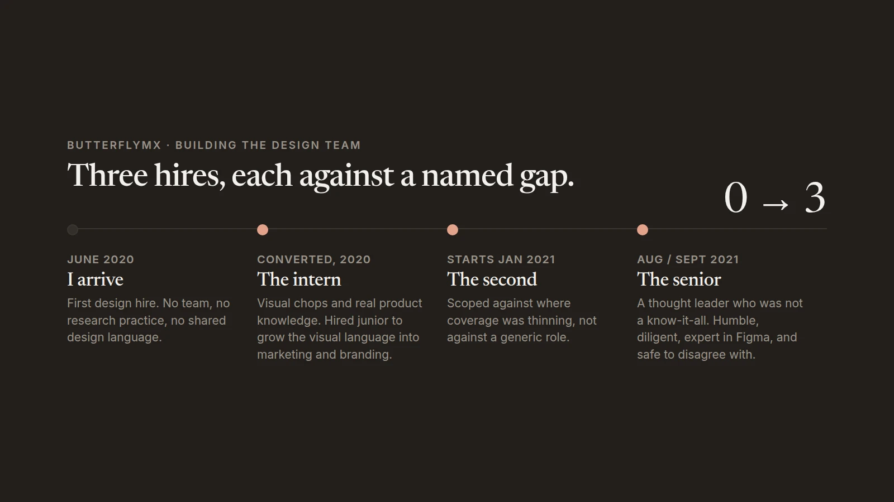

Outcomes
The clearest result is the one I did not get to see. After I left, the team became more embedded in their own product teams, and they kept running crits anyway. They still brought work to each other, formally and ad hoc, to get feedback and check their thinking. That is the part that tells me I hired the right people and built the right culture.

What was actually missing
It was not headcount. It was that design had no place in the lifecycle.
The company ran waterfall, and most of what reached the roadmap arrived through a strong sales voice. Product leadership was not hostile to design. They were unfamiliar with it as a validation or research resource, so anything that was not getting a design to engineering as fast as possible read as delay. Spending time on the where, the how, and the why of a problem was not something the process had a slot for.
So the job was not to make better screens faster. It was to get design a seat in how the company decided what to build, and then to hire people who could hold that seat once it existed.
Winning the first research program
The resident app redesign was the moment to try it. I wrote a research plan and took it to my PM first. She agreed with it, so we went to product leadership together rather than me arriving alone with a methodology.
We presented what we wanted to get out of the initiative and how it would inform the work. They said yes. I do not think they fully understood the why, and they did not push back either. We had made a strong enough case that the alternative was designing without knowing.
Getting the PM first is the part I would repeat. A research plan carried in by design alone is a design opinion. The same plan carried in by design and product is a product decision that has already been argued.
Hiring against gaps, not headcount
I made the case to the head of product for how I wanted to structure the team: the gaps we had, and what each hire was meant to fill as we learned people's skill sets, contributions, and superpowers. Three hires over about eighteen months, each one for a different reason.
The intern we converted
The first designer was already there as an intern. Strong visual chops and a real understanding of the company and the products, with a lot still to learn. We brought them on full time as a junior to support design initiatives and to grow the visual language as it cascaded out into marketing and product branding. Hiring for company knowledge and visual instinct, and teaching the rest, was the right trade at that stage.
The second designer
Hired before the end of 2020 to start in the new year. By then we knew where the coverage was thinning, and the hire was scoped against that rather than against a generic job description.
The senior
Hired around August and September of 2021. I was looking for a thought leader who was not a know-it-all and not overbearing. Someone the team could learn from. We found a person who was humble, diligent, and genuinely expert in Figma. They shaped the more senior projects and worked well with the other designers, giving feedback that was constructive rather than positional. We were always challenging each other to find the best path.
What I would tell you about it
The thing I built that lasted was not the design system, and it was not the org chart. It was a room where people brought unfinished work to each other on purpose. That survived my leaving, a reorg, and the team being split across product teams. Systems get replaced. A team that still wants each other's feedback when nobody is making them is harder to undo.